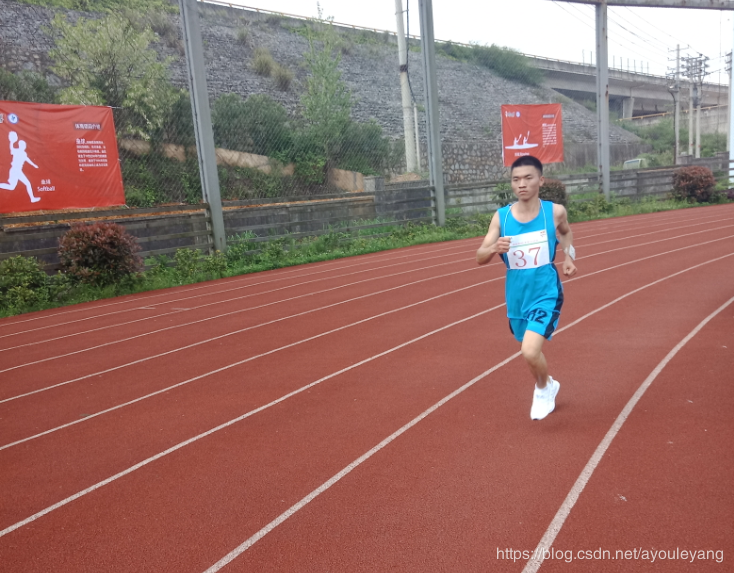
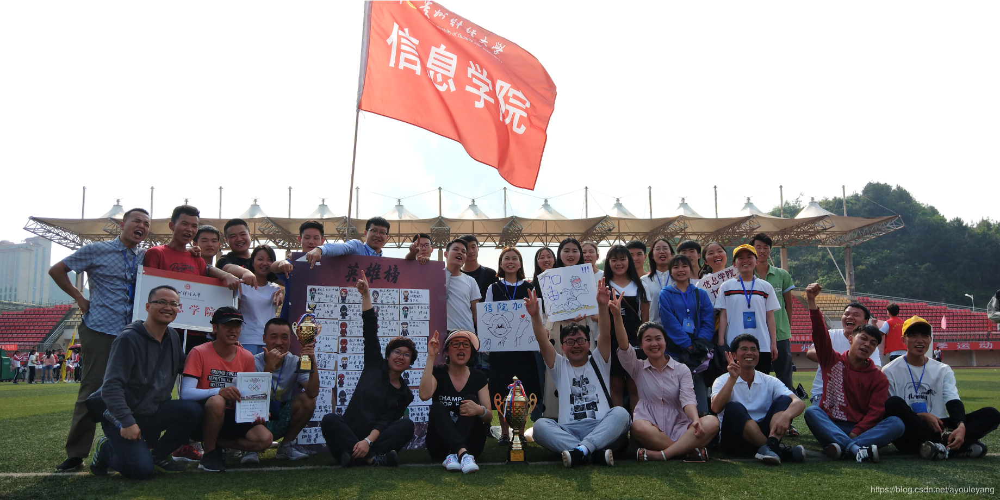

刚才学不久，迎来的就是2019年贵州财经大学春季运动会，庆祝中华人民共和国成立70周年。在运动会开始前，我动员公管学院和数统学院和我们学院一起联合去做义务劳动，擦洗运动场的凳子，迎接运动会的到来。这次的组织还是相当成功的，一共有60人参与在其中，全部把它清洗了一遍。
在这次的运动会中我还是参加了10000米长跑项目，这是我第三次参加运动会的长跑了。5000、10000在很多人看来是一个很了不起的数字，但不可忽略的是一个群体的加油呐喊，让自己坚持下来，不愿放弃别人对自己的期待。

生活也就是这样，本来不能坚持的，只是找到了不能让自己放弃的理由，挺过一次又一次，最后完成目标！一个人可以走得很快，但是一群人可以走得很远，当有人愿意陪自己走的时光，那是相当幸福的。

这估计也是我在信息学院学生会最后一次为大家拍照了，但是能为大家记录两年的成长时光，也是超级有满足感的，希望未来信息学院的体育也越来越强！